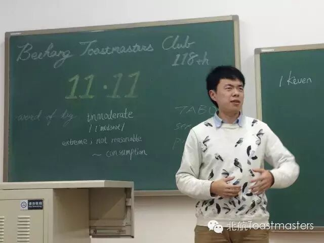
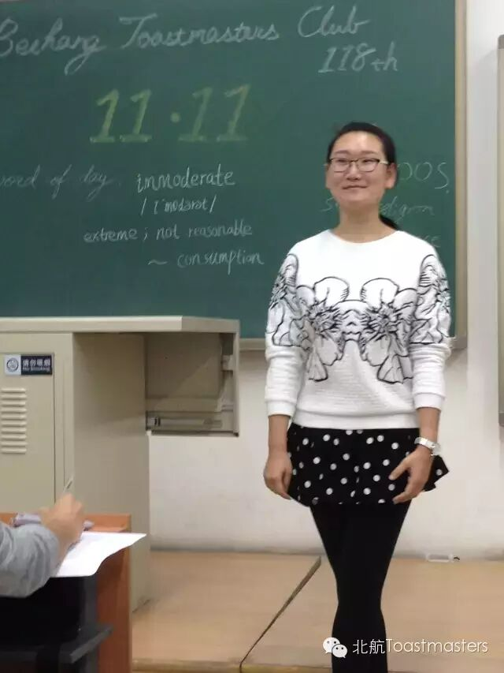
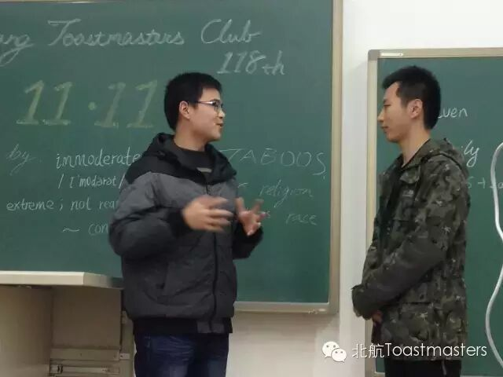
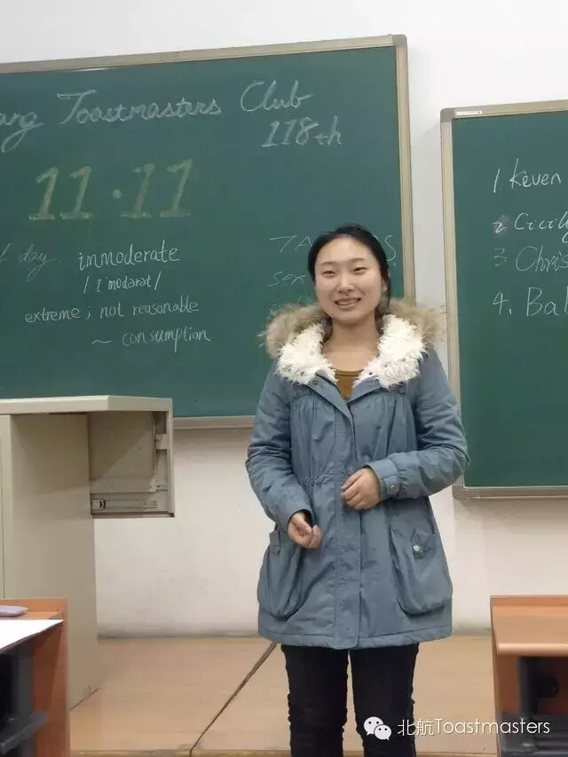
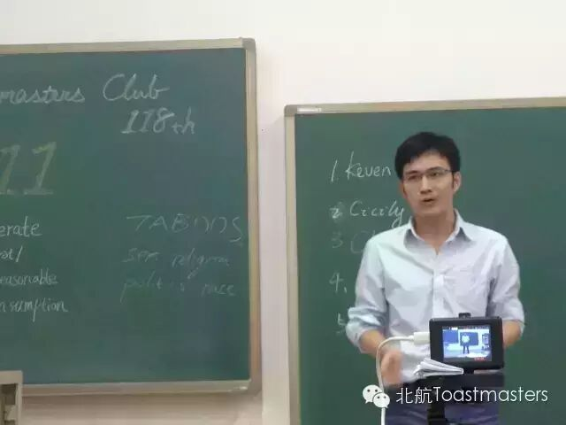
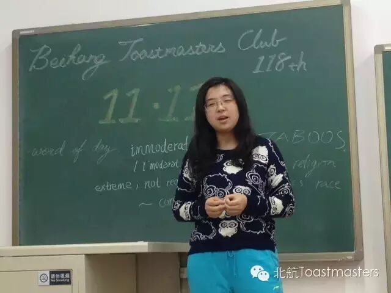
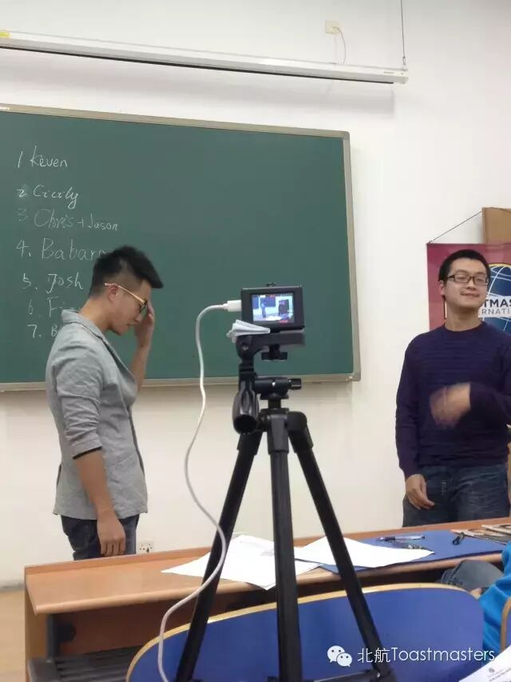
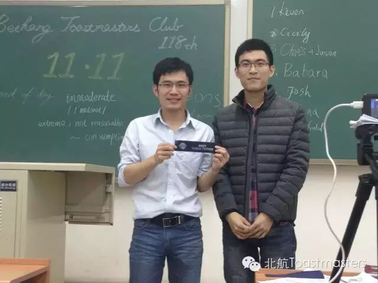
~Joshua， 说说在今年11.11有没有买啥，Joshua说他其实一开始并没有想买什么，后来想着应该会便宜一点，于是就随便买了5000多的东西，瞬间看到他身上散发出了土豪的金光，吃块土，冷静下
~Fiona， 映像最深的网购经历，她说到她第一次在网上买东西的经历，遇到了服务态度很好的客服，让她倍感安心。说话我第一次网购都不知道有客服这个玩意，所以并没有感受那样的人情味
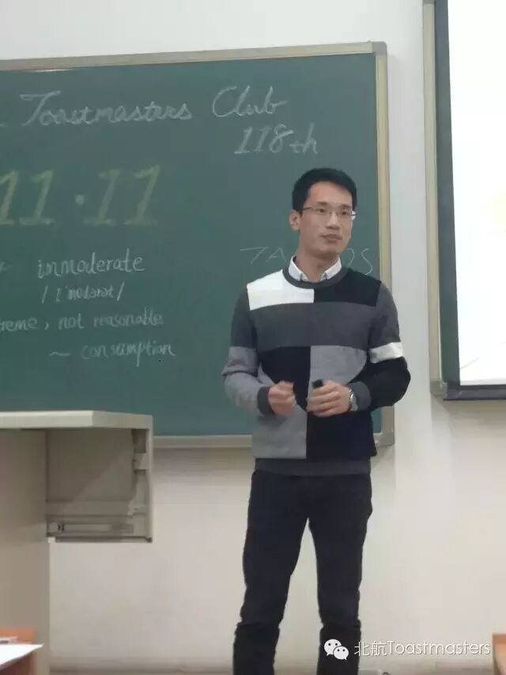
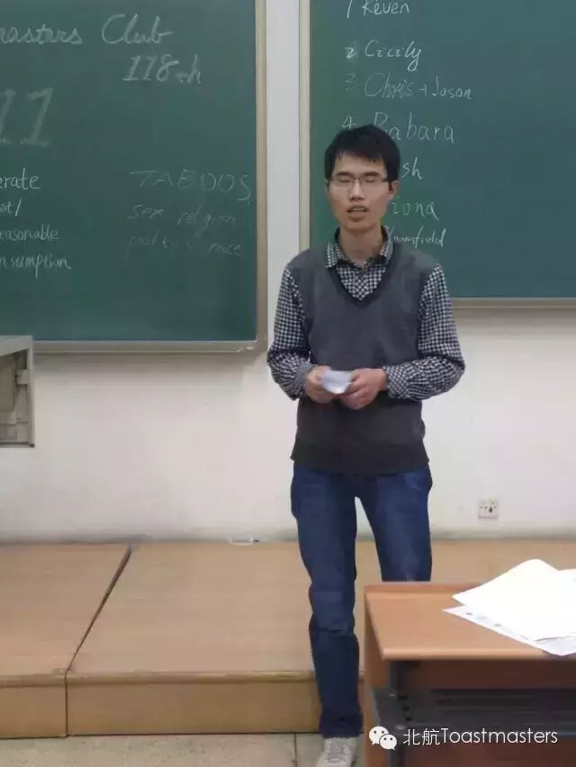
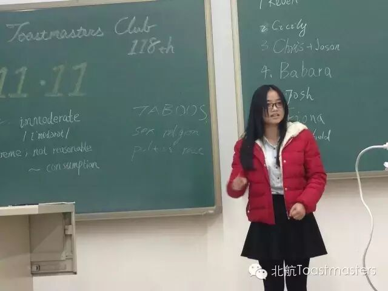
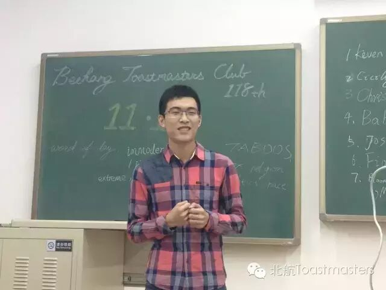
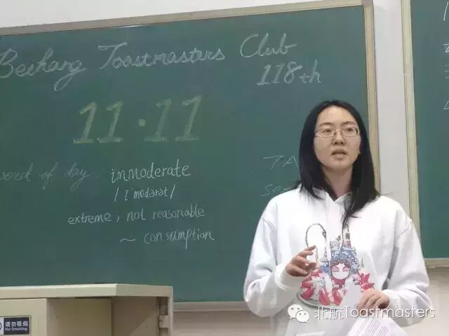
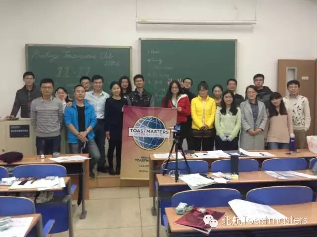